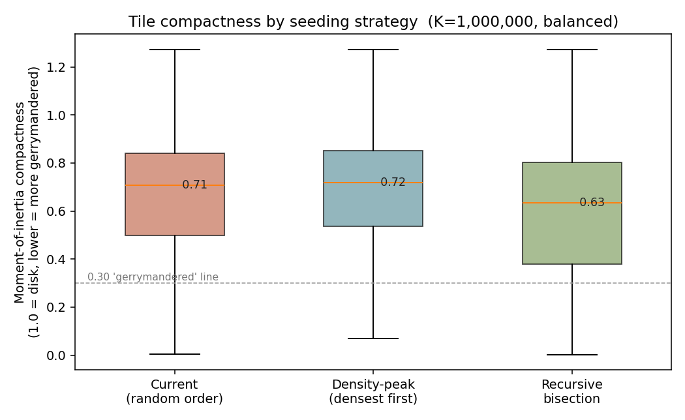
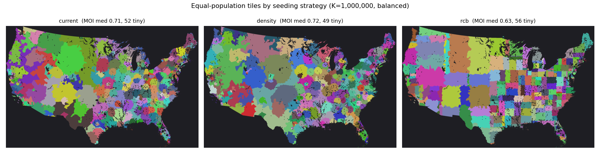
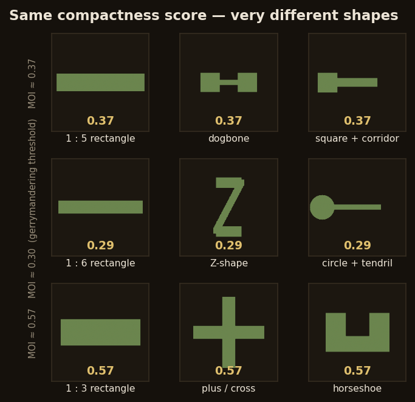
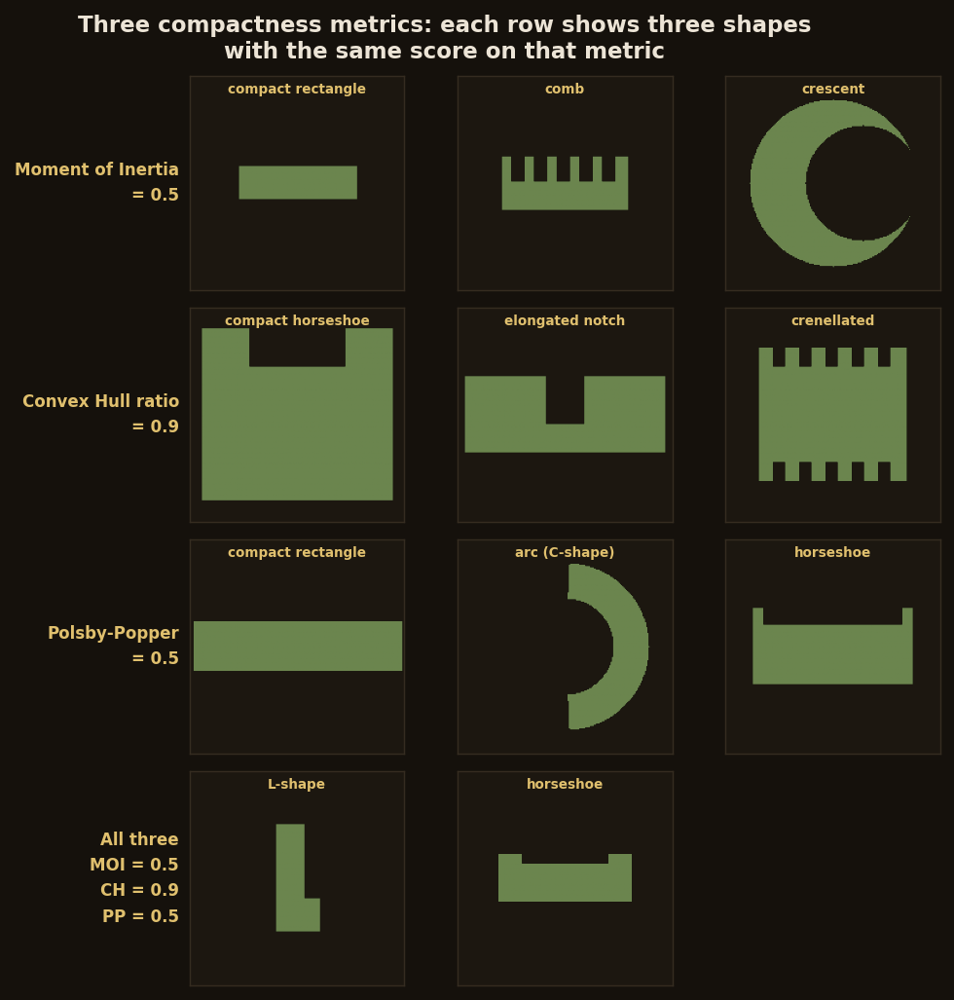

One Million Americans Per Tile
{kind=link}
329 tiles, each ≈ 1,000,000 residents (middle half 951k–1,049k). Data: 2020 U.S. Census, Albers projection.
How it's built
- Units. Census tract centers of population (~4,000 people each). A finer unit exists — census blocks, often a single city block — but there are ~8 million of them, and the clustering doesn't scale to that many; tracts are the practical floor.
- Bucketing. Grow contiguous clusters to a target headcount, then move border tracts to equalise population and gently round the shapes in.
- Colour. The fewest colours so no two neighbouring tiles match.
How equal can they be?
The bigger you make each tile, the more exactly equal you can get — every tile averages over more census tracts, so its population lands closer to the target. Above about 150,000 people per tile they're essentially exact; only very small tiles (a few tracts each) leave real slack.

But the map at the top of this page isn't that tight on purpose. Forcing every tile to be exactly a million makes them stretch out into thin, gerrymandered shapes. So the displayed map trades a little equality for rounder tiles: most land within ±5% of a million, and none are allowed past ±10%.
Is there one right map? No.
Re-roll the random seed and you get a different — equally valid — bucketing:

The tiles grow from randomly-ordered starting points, and the equalising tweaks run in random order too, so the seed decides where buckets start and how ties break. How much that matters depends on tile size: with thousands of small tiles the constraints pin a near-unique answer; with a few dozen big ones, seeds genuinely diverge.

Rectangles, not blobs
The map at the top grows blobby regions out of whole Census blocks. There's a completely different way to do it: rectangles. Stop treating blocks as the units — instead assume each block's people are spread evenly across it, then split the country into vertical strips and slice each strip into stacked cells, placing every cut so that each final cell holds a million people. Same rule — equal population per tile — just boxes instead of blobs, and cuts that can run straight through a block instead of only between them. (This is the version Aaron's pavement library actually makes.)
That even-spread assumption is what makes it work: once population is continuous, you can slice it anywhere — a rectangle's edge can run through the middle of a block and still leave exactly a million people on each side. The blobby version can't, because it keeps blocks whole; it can only cut between them, never through one.
Does the seeding strategy matter?
The blob map grows tiles from randomly-ordered starting points. Alex asked whether a smarter seed order would produce rounder, less "gerrymandered" tiles. Three strategies on the same Census data:
- Random order — what the site ships: shuffle all ~83,000 tract centers, then grow each unclaimed one into a tile.
- Density-first — seed the densest tracts first, on the theory that urban cores close off into compact tiles before the surrounding suburbia claims them.
- Recursive bisection — repeatedly split the country along its long axis at the population-weighted median; never grows blobs at all.
Compactness is measured by moment-of-inertia score — (Area²/2π) ÷ Σr² about each tile's centroid. A perfect disk scores 1.0; tendrilly or elongated shapes score lower. (Polsby–Popper, the classic redistricting metric, is staircase-biased on rasters and barely discriminates between strategies, so MOI leads.)


Density-first is mildly better: ~3% higher median compactness, ~15% fewer gerrymandered tiles, and tighter population equality (CV 0.084 vs 0.094). The "Vatican city" prediction also holds in spirit — seeding a dense core first lets it close off as a small self-contained tile before the suburbs claim it.
Recursive bisection has near-perfect equal population (CV < 0.005) but is the least compact strategy: axis-aligned cuts produce elongated rectangles, not blobs. Its win is precision, not shape.
The upshot: seeding order matters a little, not a lot. Switching to density-first would nudge the map toward rounder tiles, but the improvement is incremental — the equalising pass after seeding is the bigger factor in final tile shape.
What the compactness score measures
Looking at those maps, the recursive-bisection tiles — clean rectangles — scored worse on compactness than the blobby random-growth tiles. That didn't match my intuition of what "gerrymandered" means. So I looked more carefully at what the MOI score is actually measuring: how spread out a shape's pixels are from its centroid, relative to its area. A long thin rectangle scores low for the same reason a circle-with-tentacle does — both have pixels far from their center.

Any single metric is easy to fool. Each row below shows one metric's blind spot: a normal compact shape alongside two "cheat" shapes that pass the metric while still looking gerrymandered. The last row shows what slips through all three at once.
- MOI is blind to jagged edges and smooth concavities — a comb and a crescent both pass.
- Convex hull ratio is blind to elongation — a compact horseshoe, an elongated notch, and a crenellated strip all score CH = 0.90 despite looking very different.
- Polsby-Popper is blind to smooth deep concavities — a thick arc and a horseshoe pass because their curved edges are perimeter-efficient.
- All three together still miss the diagonal loophole: a parallelogram is perfectly convex (CH = 1.00), not elongated (MOI ≈ 0.50), and has smooth edges (PP ≈ 0.51), but it slices through a geographic grid at an odd angle.

Thresholds: MOI ≥ 0.50, CH ≥ 0.90, PP ≥ 0.50. Score in gold = the metric that row is testing.
Prior work
Partitioning a place into equal-population pieces is an old idea. The closest relatives are Neil Freeman's Fifty States with Equal Population, the Engaging Data / FlowingData "split the US by population" interactives, Slate's Equal Population Mapper, and capacity-constrained Voronoi / automated-redistricting methods generally. What's different here is the granularity — hundreds of tiles, so it reads as a texture rather than a few regions.